Table of Contents
01 | Purpose, Scope and Operating Model
The IntraStack CRM Platform is the operational system of record from the first customer interaction through commercial approval, staffing or consulting delivery, project execution and renewal.
What the platform controls
Customer truth
Companies, decision makers, operational contacts, candidates, vendors, communication details and relationship tags.
Commercial truth
Opportunity owner, pipeline, stage, expected value, source, urgency, quotation, contract dates and confirmed Sales Order.
Staffing truth
Requirements, recruiters, candidate submissions, interviews, placement approvals, rates and gross margin.
Delivery truth
Delivery project, template tasks, owners, deadlines, timesheets, commercial traceability and renewal dates.
End-to-end record flow
Staffing adds an operational branch between opportunity and delivery:
02 | Access, Roles and Login
Employees must use an internal Odoo user. Portal users cannot operate the CRM, Sales, Staffing and Project back office. Access is assigned from the Employee record by an HR Manager or System Administrator.
| Role | Primary responsibilities | Included application access |
|---|---|---|
| Sales Manager | Manage teams, all opportunities, forecasts, quotations and approvals. | CRM/Sales management, quotation templates, Projects, timesheet approval. |
| Sales Executive | Manage assigned customer relationships, opportunities, activities and quotations. | CRM/Sales user, quotation templates, Projects, personal timesheets. |
| Recruiter | Operate requirements, candidate submissions, interviews and recruitment activities. | All CRM leads required for staffing, Staffing Operations and Project user access. |
| Project Manager | Plan delivery, assign tasks, monitor project execution and approve time. | All CRM leads, Project management and timesheet approval. |
| Consultant | Execute assigned work and record time. | Assigned Projects and personal timesheets. |
First login
- Open the company CRM URL using HTTPS.
- Use the invitation email to set a personal password. Do not share accounts.
- Confirm the correct company, timezone and language in Preferences.
- Open the application selector and verify that the applications required for the assigned role are visible.
- Configure notification preferences and review the Activities menu.
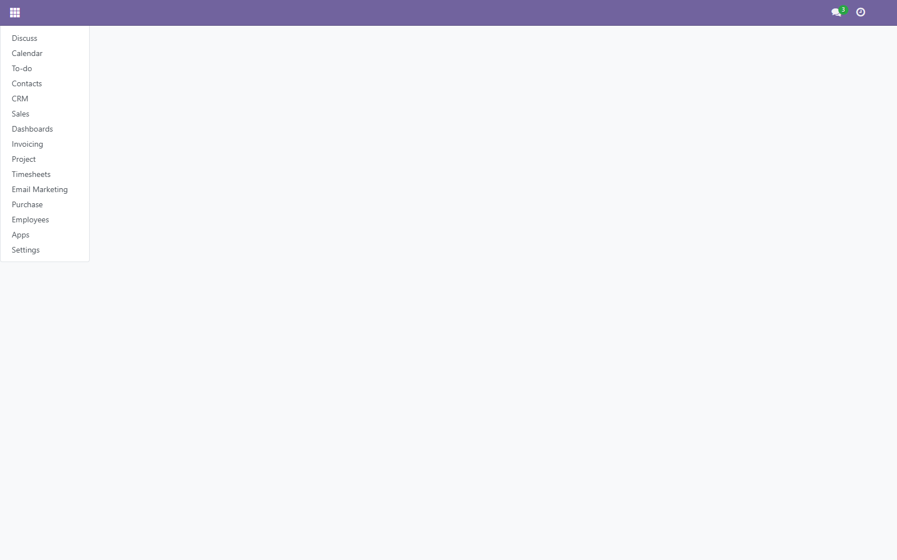
03 | Navigation and Record Conventions
Common Odoo controls
| Control | How to use it |
|---|---|
| Search bar | Search a value, add filters, group records and save frequently used searches. |
| Kanban | Visual pipeline. Drag records only when the operational exit criteria for the destination stage are met. |
| List | Bulk review, export and import. Use optional columns to expose owner, stage, activity and dates. |
| Chatter | Record internal notes, log messages, upload supporting files and review field changes. |
| Activities | Schedule calls, emails, meetings and to-dos with an owner and deadline. |
| Smart buttons | Open related quotations, staffing requirements, projects, submissions, interviews or placements. |
| Archive | Hide obsolete master data without breaking historical links. Prefer Archive over Delete. |
Record naming conventions
- Company: legal or commonly recognized customer name.
- Opportunity:
Customer – Service / Requirement – Period. - Staffing requirement:
Customer – Role – Location. - Project: generated from the opportunity/order; retain the commercial reference.
- Activities: begin with an action verb and state the expected result.
04 | Customer and Contact Database
The Contacts application is the shared customer database. A company is stored once and its people are created as related contacts. Candidates and recruiter vendors are also contacts, distinguished by relationship and tags.
Create a customer company
Select Company. Search first to confirm that the organization does not already exist.
Complete company name, website, phone, address, country, Tax ID where applicable and the responsible salesperson.
Use the Contacts & Addresses area to create decision makers, procurement, technical and operational contacts. Add job title, direct email and mobile number.
Tags enable filtering and management reporting. Use only approved tags and avoid creating spelling variants.
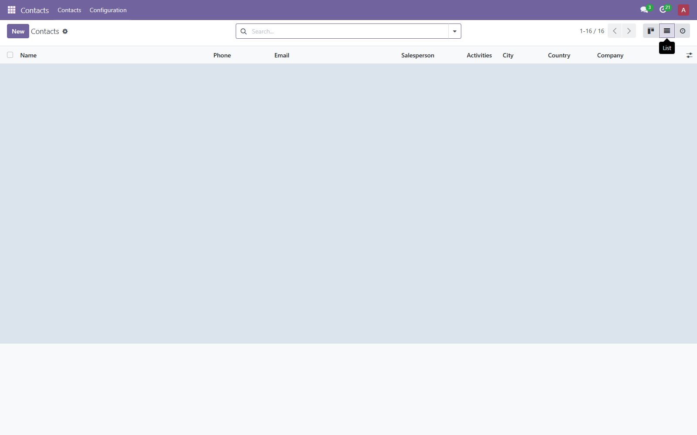
Contact quality checklist
- Company record exists only once.
- Individual contact is linked to the correct company.
- Email and telephone formats are valid.
- Job title and relationship role are current.
- Decision maker status on the opportunity reflects the primary deal contact.
- Internal notes do not contain unnecessary sensitive personal information.
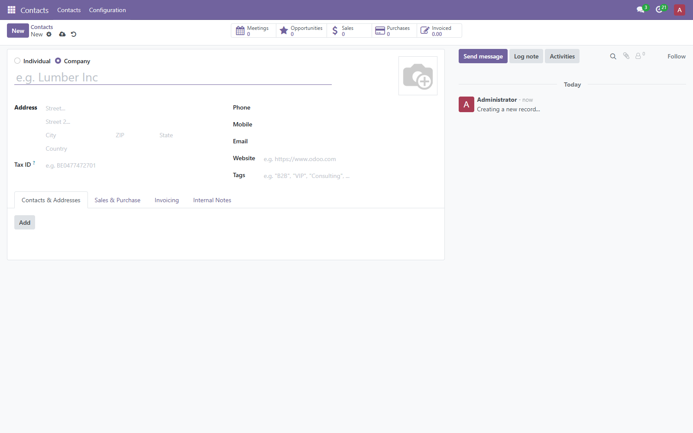
Contact types used by IntraStack
| Record type | How to create | Required operating convention |
|---|---|---|
| Customer company | Contacts → New → Company | One legal/customer organization per record; add approved customer tags. |
| Company contact | Open company → Contacts & Addresses → Add | Set the related company, job position, direct email/mobile and decision-maker relevance. |
| Candidate | Contacts → New → Individual | Use the Candidate tag; store general profile information on the contact and requirement-specific facts on the Submission. |
| Recruiter/vendor | Contacts → New → Company | Use Vendor and Recruiter Partner tags; keep commercial partner notes separate from candidate records. |
How to find a customer's contact information
- Open Contacts from the application selector.
- Use the search field for company name, person name, email or phone.
- Use filters such as Companies, Individuals or a relationship tag.
- Open the company record and review the Contacts & Addresses section for stakeholders.
- From an opportunity, click the Customer field or contact link to return to the shared customer database.
05 | CSV/XLSX Import and Export
Odoo 17 Community supports CSV and XLSX import. The controlled templates shipped with the platform use External IDs so the same file can update existing records without creating duplicates.
Download a template from the Import screen
After opening Import records, use the Need Help? panel to download the relevant IntraStack Template. Replace the example rows, preserve the header row, and upload the completed file on the same screen. Contacts provides separate templates for companies, people, candidates and recruiter vendors; CRM, Employees and each Staffing Operations record type provide their own template. Odoo's standard templates remain available, but the IntraStack templates are recommended because they include the platform's custom BRD fields and External ID relationships.
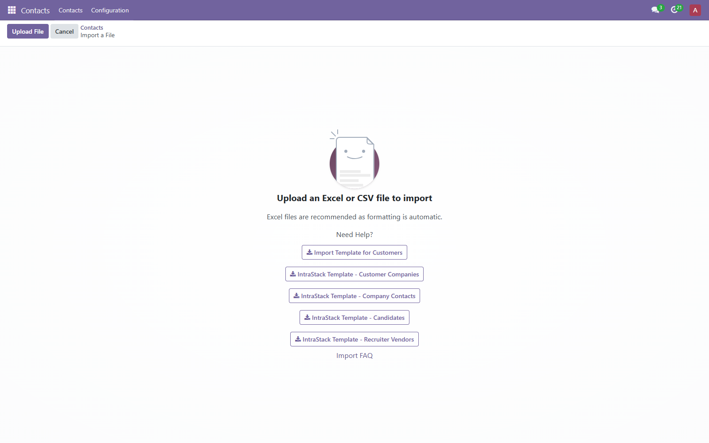
Exact import procedure
- Open the target application and switch to List view. Import is not normally available from Kanban or Form view.
- Open the list action menu (the small dropdown beside the list controls) and select Import records.
- In Need Help?, click the template for the record type. For a customer load, download
Customer Companiesfirst, thenCompany Contacts. - Open the downloaded CSV/XLSX and replace only the example values. Keep the header names, External IDs, date format and selection values controlled.
- Upload the file, inspect every automatic field mapping, and manually correct any field with a warning or no match.
- Select Test. Do not select Import until the test reports no errors and the expected row count is correct.
- After importing, search by External ID, open a sample record and verify relational links before loading the next dependent file.
Required import order
- Customer companies.
- Individual contacts linked through
Related Company/External ID. - CRM opportunities linked through
Customer/External ID. - Staffing requirements linked through CRM Opportunity and Customer External IDs.
Import steps
Use one header row, ISO dates YYYY-MM-DD, numeric amounts without currency symbols and approved selection labels.
Upload the file and inspect the preview. If the UI language differs from English, manually map each field.
Do not match customers by approximate names when a stable External ID is available.
Resolve every error before Import. Never ignore a row-count mismatch.
Record the file name, operator, import date and expected row count. Search/export the imported batch and compare totals.
| Template | Purpose | Important dependencies |
|---|---|---|
crm_companies_import.csv | Customer company master data. | Seed companies before related contacts/opportunities. |
crm_contacts_import.csv | People related to customer companies. | Company External IDs must already exist. |
crm_candidates_import.csv | Candidate Contact master data. | Use the Candidate tag; attach resumes after import. |
crm_recruiter_vendors_import.csv | Recruiter/vendor companies. | Use Vendor and Recruiter Partner tags. |
employees_import.csv | Employee master data and operational role. | HR must create internal users and sync access afterward. |
crm_opportunities_import.csv | Commercial opportunities with routing fields and contract dates. | Customer External ID must already exist. |
staffing_requirements_import.csv | Role-level staffing requirements. | Opportunity must exist and be classified Staffing. |
staffing_candidate_submissions_import.csv | Candidates proposed against requirements. | Requirement, candidate and recruiter login must exist. |
staffing_interviews_import.csv | Interview schedule and client/internal interviewers. | Submission must exist; complete outcome manually. |
staffing_placements_import.csv | Draft placements and commercial rates. | Use workflow buttons for approval, confirmation and activation. |
Where to find Import
- Open the target application and switch to List view. Import is normally not shown in Kanban or Form view.
- Open the small gear / Action menu beside the list title. Depending on the Odoo theme, it may appear under Favorites.
- Select Import records, upload CSV/XLSX, map fields, select Test, then select Import.
Template-to-screen map
| Screen | Template button | When to use |
|---|---|---|
| Contacts | Customer Companies / Company Contacts / Candidates / Recruiter Vendors | Master customer, stakeholder, candidate and vendor data. |
| CRM Opportunities | CRM Opportunities | Load commercial opportunities with IntraStack routing and contract fields. |
| Employees | Employees and Roles | Load employee master data. HR still creates internal users and synchronizes access. |
| Staffing Requirements | Staffing Requirements | Load role-level requirements after the opportunity and customer exist. |
| Candidate Submissions | Candidate Submissions | Load one candidate against one requirement. |
| Interview Schedule | Interview Schedule | Load planned interviews after submission and interviewers exist. |
| Placements | Staffing Placements | Load draft placements only; use workflow buttons for approval and activation. |
| Banks / Bank Accounts | Banks / Contact Bank Accounts | Optional accounting master data. Import banks first, then accounts. |
Export records
Apply filters first so the list contains only the intended customers, opportunities or staffing records.
Select individual checkboxes or the header checkbox. If Odoo offers “Select all records”, use it only after confirming the filter and total count.
The Action menu appears after at least one record is selected. If Export is absent, ask an administrator to verify the user's Export permission.
Select only necessary fields. For a file intended for later re-import, include External ID and select the import-compatible export option.
Use XLSX for business review and CSV for controlled system exchange. Store exported customer/candidate data only in approved locations.
Recommended export field sets
| Record type | Recommended fields |
|---|---|
| Contacts | External ID, Name, Is a Company, Related Company, Email, Phone, Mobile, Website, Country, Job Position, Tags. |
| Opportunities | External ID, Opportunity, Customer, Salesperson, Team, Stage, Classification, Service Category, Urgency, Source, Expected Value, Contract dates, Next Activity. |
| Staffing Requirements | External ID, Requirement, CRM Opportunity, Customer, Role, Status, Positions, Recruiter, target dates, bill/cost rates and margin. |
| Placements | Requirement, Candidate, Customer, Status, Contract/SOW, Order, Project, dates, rates, weekly revenue and margin. |
06 | CRM Opportunity Data Model
An opportunity combines Odoo's standard CRM information with IntraStack fields that drive pipeline routing, quotation templates, commercial validation and delivery creation.
| Field | Allowed values / meaning | Operating guidance |
|---|---|---|
| Opportunity | Short commercial description. | Include customer and service/requirement. |
| Customer | Company or commercial contact. | Required before quotation and Won. |
| Salesperson | Commercial owner. | Automation activities are assigned to this user. |
| Deal Classification | Staffing, Consulting, Subcontracting, Managed Services. | Controls team, first stage, quotation and project template. |
| Service Category | Cloud, AI/ML, Cybersecurity, DevOps, Data Engineering, App Modernization. | Select the dominant technology domain. |
| Urgency Flag | Immediate 0–30 days, Short-term 30–90 days, Long-term 90+ days. | Use the customer's decision/need timeline. |
| Source Tracking | LinkedIn, MSP Outreach, Prime Contractor, Referral, Vendor Portal, Website, Email, Other. | Use the original acquisition channel. |
| Expected Value | Estimated deal revenue. | Stored in Odoo's native expected revenue for forecasting. |
| Decision Maker? | Boolean. | Indicates whether the primary contact has decision authority. |
| Contract Start/End | Service delivery dates. | End cannot precede Start. |
| Renewal Review Date | Date to begin renewal planning. | Cannot be after Contract End. |
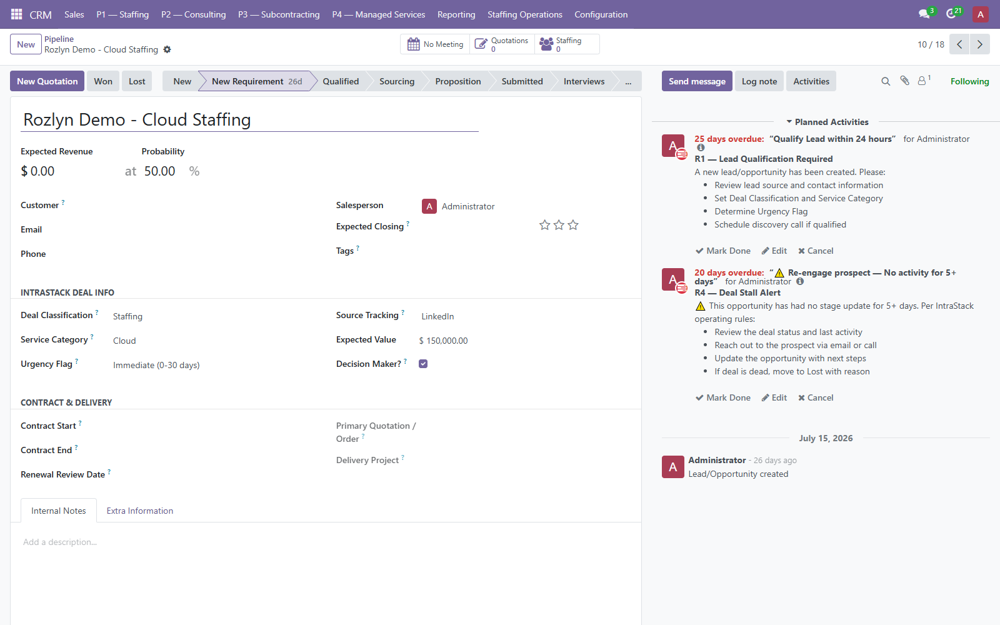
07 | The Four CRM Pipelines
P1 — Staffing
New RequirementSourcingSubmittedInterviewsOfferClosed WonActive BillingRenewal
| Stage | Exit criteria |
|---|---|
| New Requirement | Customer, role, skills, volume, dates, rate target and contact understood. |
| Sourcing | Recruiter assigned and candidates actively identified/screened. |
| Submitted | Qualified profiles and commercial rates sent to customer. |
| Interviews | At least one customer interview scheduled or completed with feedback. |
| Offer | Preferred candidate selected and terms under agreement. |
| Closed Won | Commercial readiness complete and Sales Order confirmed. |
| Active Billing | Placement active; time/billing process operating. |
| Renewal | Extension/renewal decision actively managed. |
P2 — Consulting
DiscoveryQualificationSolution DesignProposalNegotiationClosed WonDelivery
P3 — Subcontracting
OutreachVendor QualificationCapability ReviewApproved VendorActive Engagement
P4 — Managed Services
Qualified LeadAssessmentProposalContractActive ServiceRenewal
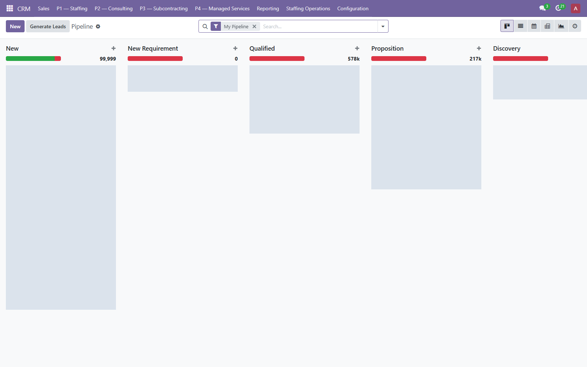
Current production pipeline screens
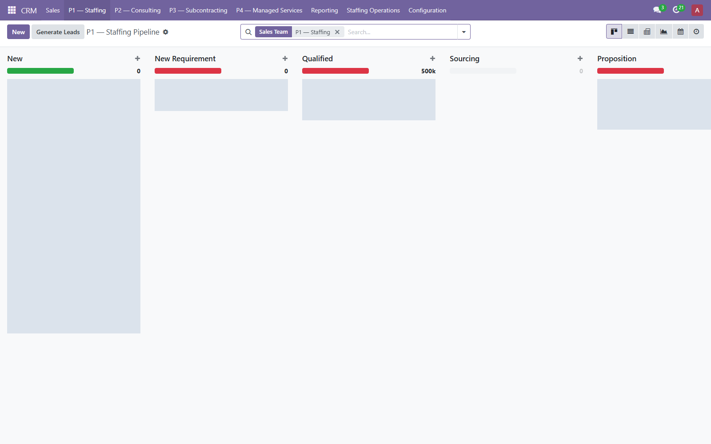
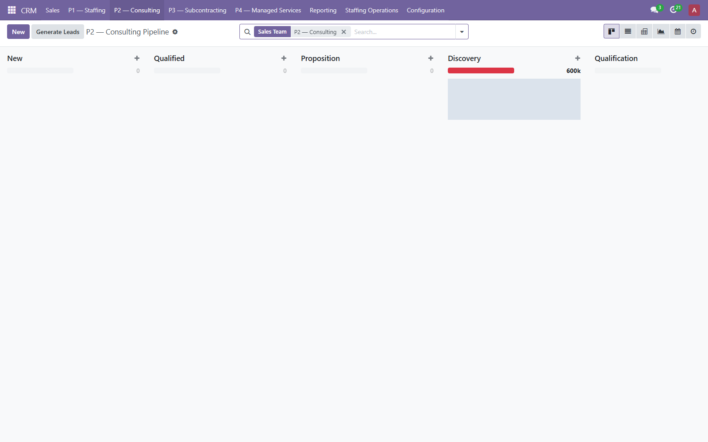
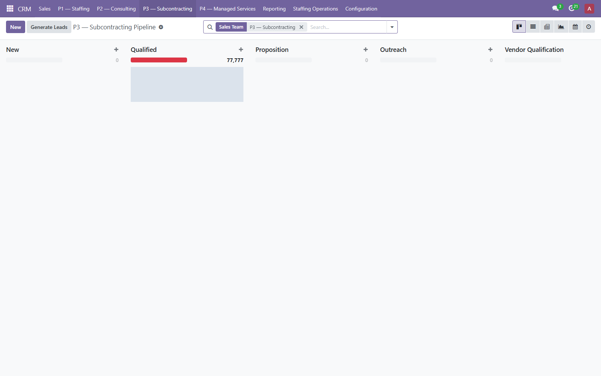
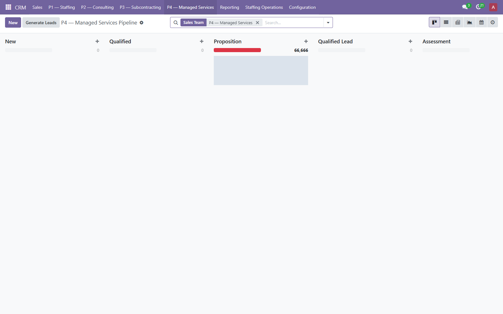
How to use the Kanban screen
- Use the search bar to filter My Pipeline, owner, customer, tag or stage.
- Use the view switchers at the top-right to change between Kanban, List, Calendar, Pivot, Graph and Activities where available.
- Use the plus icon on a stage only for a quick opportunity capture; open the full form immediately afterward.
- Click a card to open the opportunity and use smart buttons rather than creating disconnected quotations, requirements or projects.
- Drag a card only when the stage exit criteria are satisfied. Server-side routing still protects team/stage consistency.
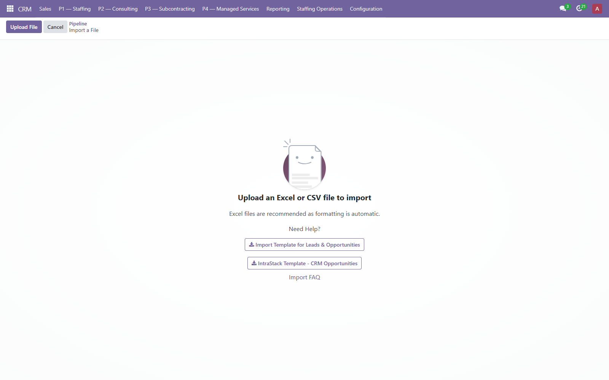
08 | Opportunity Operating Procedure
Create and qualify
Create or update the customer and primary contact before creating the deal.
Use the appropriate pipeline menu or the general Pipeline. Enter customer, salesperson and opportunity name.
Complete classification, service category, urgency, source, expected value and decision maker status. The team/stage will route automatically.
Schedule an activity with an owner and deadline. Add discovery notes and files in the Chatter.
Move stages only when the required customer action, deliverable or approval exists.
Quick create versus full form
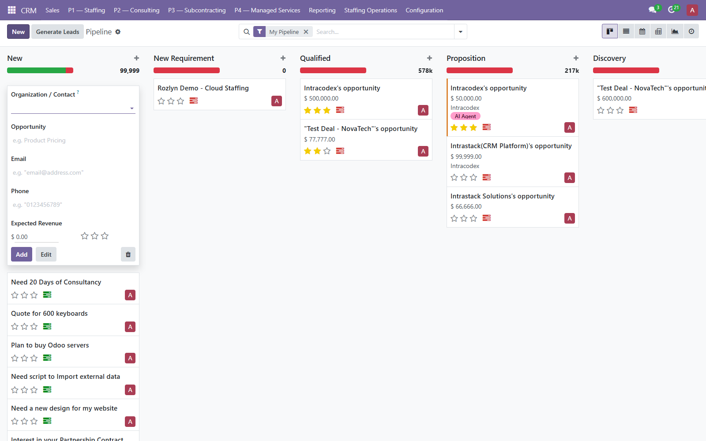
- Select New in Kanban to open the quick-create card.
- Enter Organization/Contact, Opportunity, Email, Phone and initial Expected Revenue.
- Select Edit when the record requires classification, service, urgency, source, decision-maker, contract or delivery fields.
- After saving, verify the opportunity moved to the team and first stage matching Deal Classification.
Opportunity header and smart buttons
| Control | Purpose |
|---|---|
| New Quotation / Quotations | Create or review linked quotations and Sales Orders. |
| Won / Lost | Close the commercial outcome. Won is validated against mandatory commercial data. |
| Staffing | Open Staffing Requirements related to a Staffing opportunity. |
| Delivery Project | Open the project generated from a confirmed order. It appears only when a project exists. |
| Activities | Schedule the next call, email, meeting or to-do with a deadline. |
| Send message / Log note | Communicate with followers or record internal-only operational context. |
Commercial readiness before confirmation
The Sales Order cannot be confirmed until all of the following are complete:
- Customer.
- Deal Classification.
- Service Category.
- Urgency Flag.
- Source Tracking.
- Expected Value greater than zero.
- Contract Start and Contract End.
- At least one service product order line.
- Quotation customer matches the opportunity customer.
Moving an opportunity directly to a Won stage also invokes readiness validation. This prevents incomplete contracts from entering delivery.
Lost opportunities
When a deal is no longer viable, mark it Lost and choose a meaningful reason. Add a concise internal note describing the decision, competitor or timing issue. Do not leave dead opportunities indefinitely in an active stage.
09 | Activities and Automation
Activities make ownership and deadlines visible. Automated activities supplement—not replace—the salesperson's own follow-up plan.
| Rule | Trigger | System action | Expected user response |
|---|---|---|---|
| R1 | New lead/opportunity created. | Qualify Lead within 24 hours. | Verify contact, source, classification, service, urgency and discovery action. |
| R2 | Staffing opportunity enters New Requirement. | Submit 5 candidates within 48 hours. | Review requirement, source/screen and submit qualified profiles with rates. |
| R3 | Consulting opportunity enters Discovery. | Prepare discovery checklist and schedule call. | Research customer, prepare questions, schedule stakeholders and document outcomes. |
| R4 | Open deal has no stage update for 5+ days. | Re-engage prospect alert. | Contact customer, update next step, progress or close Lost. |
Activity hygiene
- Complete an activity only after performing the action.
- Schedule the next activity before leaving an active opportunity.
- Use a meeting activity for scheduled discovery/interview events and record the outcome.
- Do not assign activities to inactive users or generic administrator accounts.
10 | Quotation, Contract and Sales Order
Automatic quotation template mapping
| Classification | Commercial template | Typical content |
|---|---|---|
| Staffing | Staffing Rate Card | Engineer, Senior Engineer and Tech Lead hourly service lines. |
| Consulting | Consulting SOW | Discovery/Assessment, implementation engineering and project management. |
| Subcontracting | Staffing Rate Card | Rate-based service structure until a dedicated subcontractor SOW is approved. |
| Managed Services | Managed Services Contract | Onboarding, monthly managed service and additional hours. |
Create and confirm a quotation
Confirm customer, classification, service, urgency, source, value and contract dates.
The system selects the commercial template and links the quotation to the opportunity.
Adjust quantities, descriptions and prices according to the approved proposal. Never confirm placeholder pricing.
Use the approved email/quotation process and capture required commercial approval.
Confirmation validates commercial readiness, marks the opportunity Won and creates or reuses exactly one delivery project.
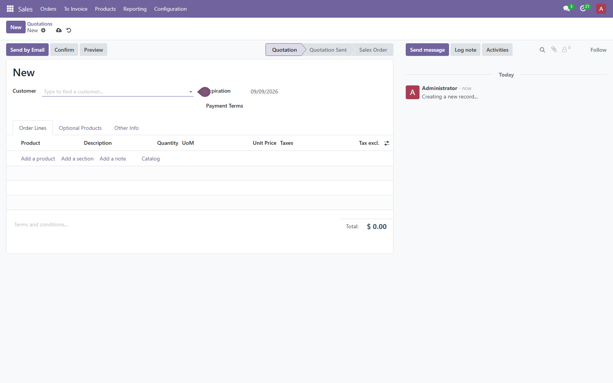
11 | Delivery Projects and Timesheets
Confirming a qualifying Sales Order creates one delivery project. If Odoo's standard service-product project already exists, the integration reuses it instead of creating a duplicate.
Project templates
| Service line | Template | Operating intent |
|---|---|---|
| Staffing | Staffing Delivery | Onboarding, assignment readiness, ongoing coordination and closeout. |
| Consulting | Consulting Delivery | Discovery, design, implementation, acceptance and handover tasks. |
| Managed Services | Managed Service Engagement | Onboarding, service transition, SLA operation and review tasks. |
| Subcontracting | Standard project | Project created without a dedicated BRD template; PM defines tasks for the engagement. |
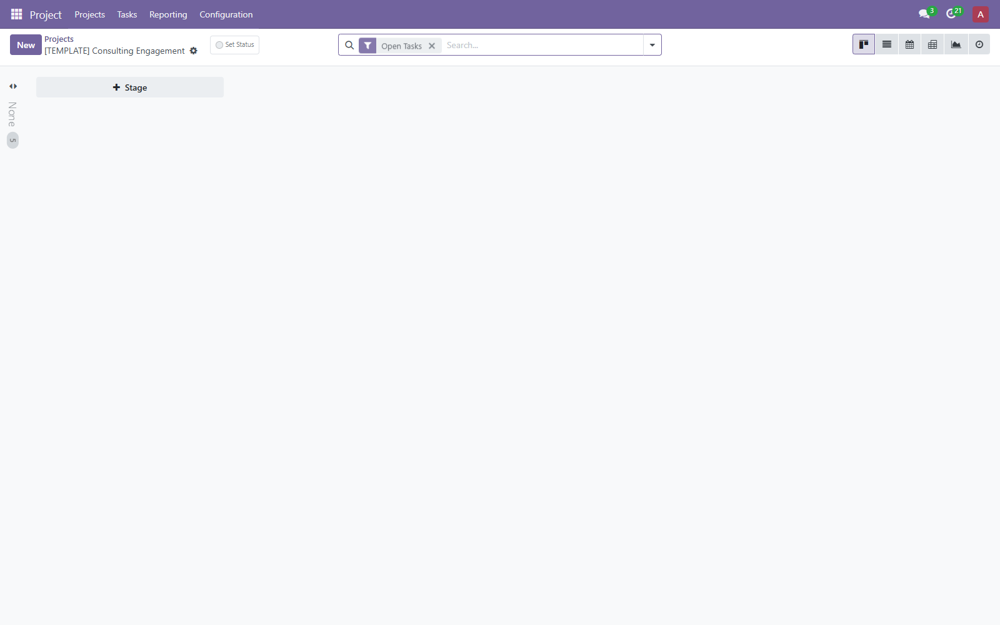
Project Manager procedure
- Open the project from the CRM opportunity or confirmed Sales Order.
- Verify customer, opportunity and order links.
- Review template tasks, remove only tasks that are truly out of scope and add project-specific deliverables.
- Assign every active task to an accountable user with a deadline.
- Record risks, decisions and acceptance evidence in task/project Chatter.
- Review timesheets, overdue tasks and milestones at least weekly.
Timesheet procedure
- Record time against the correct project and task, preferably daily.
- Use a clear description of the work performed, not a generic label such as “work”.
- Do not record time before the authorized contract/project start.
- Project Managers approve or correct time before billing/reporting cutoffs.
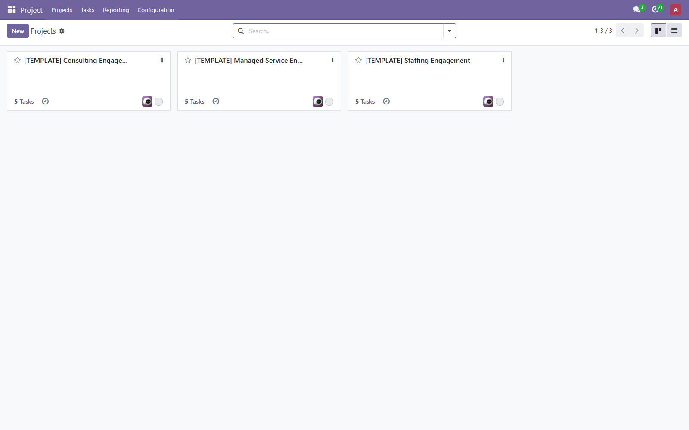
12 | Staffing Workflow Overview
The CRM Staffing pipeline reports the commercial status. Staffing Operations holds the operational detail for roles, candidates, interviews and placements.
P1 Staffing
Staffing Operations menus
- Requirements: roles or slots requested by customers.
- Candidate Submissions: candidates sourced for each requirement.
- Interview Schedule: recruiter, technical, client, managerial and final interviews.
- Placements: approved candidate engagements with rate, contract and project links.
Responsibility split
| Role | Accountability |
|---|---|
| Sales Executive/Manager | Customer relationship, commercial opportunity, expected value, rate agreement and contract. |
| Recruiter | Requirement detail, sourcing, screening, candidate submission and interview coordination. |
| Sales/Operations approver | Placement commercial approval, contract reference and margin. |
| Project Manager | Onboarding, delivery coordination, time approval and customer execution. |
Current Staffing Operations navigation
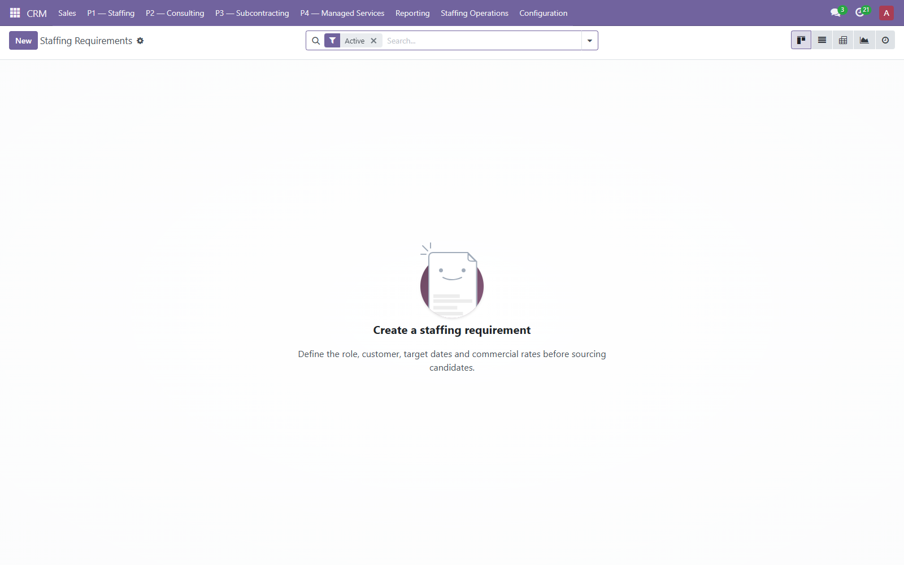
13 | Staffing Requirements
Requirement states
DraftOpenSourcingInterviewOfferFilledOn HoldCancelled
Create a requirement
- Open a Staffing-classified opportunity and use the Staffing smart button, or open CRM → Staffing Operations → Requirements.
- Select the CRM Opportunity. The customer and contract dates may default from the opportunity.
- Enter Requirement name, Role / Job Title, required skills, positions and recruiter.
- Enter location, work arrangement (On-site/Hybrid/Remote) and engagement type (Contract/Contract to Hire/Permanent).
- Enter expected start/end and target fill date.
- Enter target bill rate, target cost rate and rate unit. Review calculated Target Margin and Target Margin %.
- Add acceptance criteria and job description; attach supporting requirement documents where appropriate.
- Select Open, then Start Sourcing when recruitment begins.
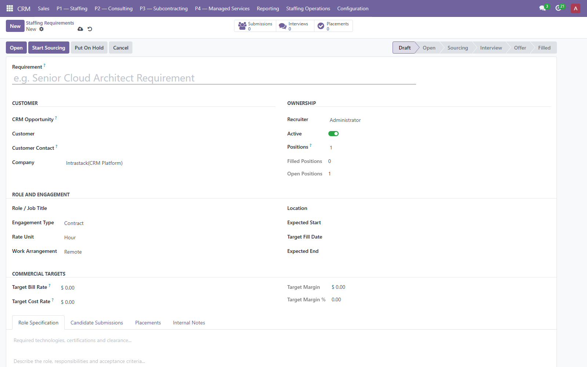
Requirement field instructions
| Field/group | Operator instruction |
|---|---|
| CRM Opportunity | Select the Staffing opportunity that originated this role. The server rejects non-Staffing opportunities. |
| Customer / Contact | Select the customer company and operational stakeholder. The contact must belong to that customer. |
| Recruiter / Positions | Assign an active internal recruiter and enter the actual number of openings. |
| Role & Engagement | Complete job title, skills, work arrangement, engagement type, location and dates. |
| Commercial Targets | Enter bill and cost rates, select the rate unit and review calculated margin before sourcing. |
| Status controls | Use the workflow buttons; do not edit status through imports merely to skip approvals. |
Requirement controls
- Positions must be greater than zero.
- Target cost must not exceed target bill rate.
- Expected End and target dates must be logically consistent with Expected Start.
- The linked opportunity must be an opportunity classified as Staffing.
- Filled/open positions are computed from active confirmed placements.
14 | Candidate Submissions
Submission states
SourcingScreeningSubmittedInterviewOfferAcceptedRejectedWithdrawn
Create and progress a submission
- Create or locate the candidate as an individual Contact. Search by email before creating a new candidate.
- From the Requirement, add a Candidate Submission.
- Select source: Internal Talent Pool, Referral, Recruiter/Vendor, LinkedIn, Job Board or Other.
- If sourced through a vendor, select the Recruiter Vendor.
- Upload Resume/CV and enter availability, screening summary and internal notes.
- Enter proposed bill and cost rates. Verify positive margin.
- Select Start Screening and document screening results.
- Select Submit when the profile has been sent to the customer; the submitted date is recorded.
- Move to Interview or Offer based on customer progression. Use Reject/Withdraw with a clear note when appropriate.
Submission quality standard
- Candidate identity and contact details are verified.
- Current resume is attached.
- Availability and location/work arrangement fit the requirement.
- Screening summary addresses mandatory skills.
- Bill/cost rates are commercially viable.
- Duplicate active submission for the same candidate/requirement is avoided.
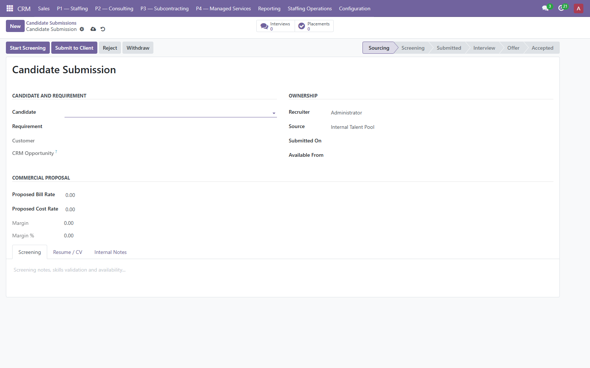
15 | Interviews and Feedback
Interview records create an auditable schedule and outcome history linked to the requirement and candidate submission.
| Field | Values / use |
|---|---|
| Interview Round | Recruiter Screening, Technical, Client, Managerial or Final. |
| Mode | Video Call, Phone or On-site. |
| Internal Interviewers | Responsible IntraStack users. |
| Client Interviewer | Customer contact linked to the requirement customer. |
| Start / Duration | Scheduled datetime and duration; End is calculated. |
| Outcome | Pending, Strong Yes, Yes, No or Strong No. |
| Feedback | Evidence-based assessment and next recommendation. |
Interview procedure
- Create the interview from the candidate submission.
- Set round, mode, date/time, interviewers, location or meeting link.
- Confirm details with candidate and customer outside the system using the approved channel.
- After the interview, select an outcome and enter feedback.
- Select Complete. The system will not allow completion while the outcome remains Pending.
- Use No Show, Cancel or Reschedule when required so pipeline statistics remain accurate.
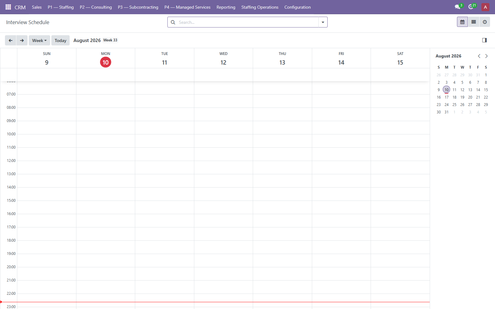
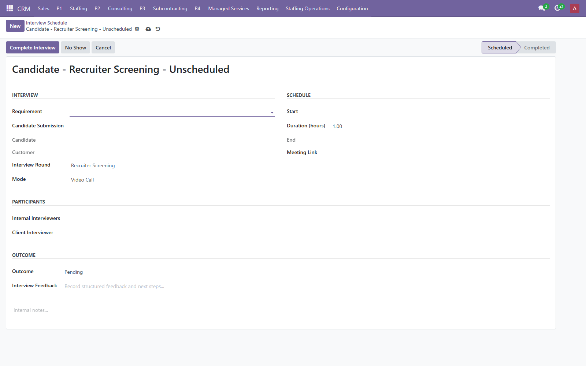
16 | Placements and Margin Control
Placement states
DraftPending ApprovalConfirmedActiveCompletedCancelled
Create a placement
- Use an accepted/offered Candidate Submission from the correct Requirement.
- Enter Placement Start/End, bill rate, cost rate, rate unit and hours per week.
- Link the confirmed Sales Order or enter a signed Contract/SOW reference.
- Verify the customer on the order/project matches the requirement customer.
- Review Gross Margin, Gross Margin %, Weekly Revenue and Weekly Margin.
- Select Submit for Approval, then Confirm after commercial approval.
- Select Activate only on or after the contract start date.
- Select Complete at the end of service; the system records an end date if one is missing.
Placement validation rules
- Bill and cost rates cannot be negative.
- Bill rate must exceed or equal cost rate.
- A confirmed Sales Order is required when an order is linked.
- A contract/SOW reference or Sales Order is required before confirmation.
- Candidate submission and placement must belong to the same requirement.
- Placement cannot become Active before Placement Start.
- Customer must match across requirement, quotation and project.
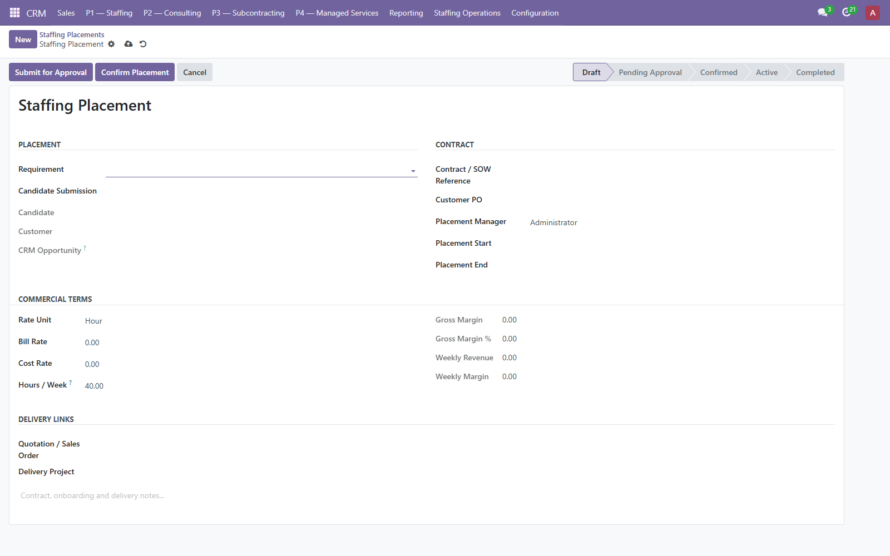
17 | Cloud Transformation Workflow
This is the primary Consulting end-to-end example requested for platform readiness.
Detailed operating steps
- Create/update the customer and stakeholder contacts.
- Create an opportunity with Deal Classification Consulting and Service Category Cloud.
- During Discovery, document business objectives, current-state environment, stakeholders, constraints and target outcomes.
- During Qualification, validate budget, authority, need, timeline, data/security constraints and procurement path.
- During Solution Design, define assessment outputs, target architecture, migration waves, assumptions, dependencies and acceptance criteria.
- Create the Consulting SOW quotation. Review Discovery/Assessment, Implementation and Project Management lines.
- Enter contract dates and expected value; negotiate scope, price and terms.
- Confirm the accepted Sales Order. The opportunity becomes Won and the Consulting delivery project is created.
- The Project Manager assigns cloned template tasks, delivery owners and deadlines.
- Consultants record time and evidence against the correct project tasks.
- At completion, capture acceptance, handover and follow-up/renewal opportunities.
18 | Other Service Workflows
Subcontracting
- Create a company Contact for the partner/vendor and apply approved vendor-related tags.
- Create a Subcontracting opportunity and assign the relationship owner.
- Progress Outreach → Vendor Qualification → Capability Review.
- Document certifications, capability, commercial constraints, references and risk.
- Move to Approved Vendor only after required business approval.
- For a live engagement, create/confirm the commercial document and use the generated standard project for delivery coordination.
Managed Services
- Qualify customer fit and perform the infrastructure/service assessment.
- Define service scope, coverage hours, response targets, exclusions, onboarding and reporting cadence.
- Create the Managed Services quotation containing onboarding, monthly service and additional-hours lines.
- Enter contract and renewal review dates before confirmation.
- Confirm the Sales Order and execute onboarding through the generated Managed Service project.
- Move to Active Service only when service transition is complete.
- Use Renewal before expiry to review scope, satisfaction, usage and pricing.
19 | Employee Activation Administration
This section is intended for HR Managers and System Administrators.
Create and invite an internal user
- Create/open the Employee record.
- Enter a unique Work Email.
- Select the IntraStack Role.
- Select Create Internal User. Confirm login and create the user.
- Select Sync IntraStack Access to apply the complete managed role bundle.
- If necessary, select Resend Invitation.
- Ask the employee to set a password and verify required applications.
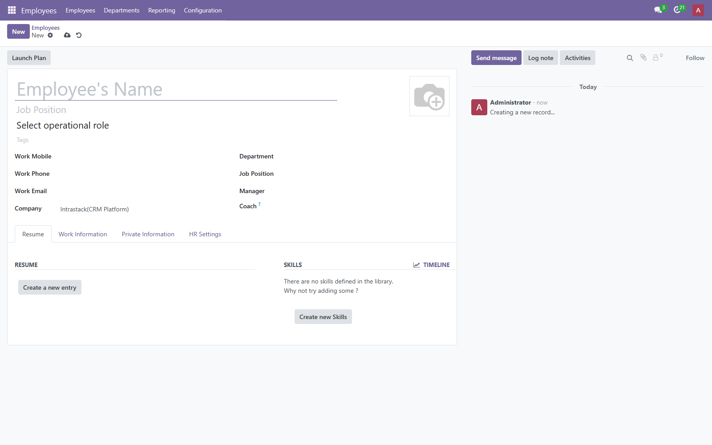
Operational role bundles
| Role | Use this role when | Core managed access |
|---|---|---|
| Sales Manager | The employee owns team pipeline, forecasting and commercial governance. | CRM/Sales management, Projects and timesheet approval. |
| Sales Executive | The employee owns assigned customers, deals, activities and quotations. | CRM/Sales user, Projects and personal timesheets. |
| Recruiter | The employee runs requirements, candidates and interviews. | CRM access needed for staffing, Staffing Operations and Project user. |
| Project Manager | The employee plans delivery and approves execution/time. | CRM visibility, Project management and timesheet approval. |
| Consultant | The employee performs assigned delivery tasks. | Project user and personal timesheets. |
Change a role
- Change IntraStack Role on the Employee.
- Select Sync IntraStack Access.
- The system removes the old managed bundle, applies the new one and preserves unrelated approved groups.
- Test access using the employee account or a controlled UAT user.
20 | Reporting and CEO Controls
Odoo's CRM reporting views combine the native forecast fields with IntraStack classifications, teams and activities.
Management review areas
- Pipeline value and expected revenue by classification/team.
- Opportunity count and value by stage.
- Overdue and upcoming activities by owner.
- Stalled opportunities and deals without a next action.
- Won/lost conversion and loss reasons.
- Staffing requirement fill progress and active placements.
- Gross margin at requirement/submission/placement level.
- Projects, overdue tasks and timesheet utilization.
Saved CEO filters
The module installs seven saved filters for recurring executive review. Managers can combine these filters with Group By for salesperson, stage, customer, classification or service category.
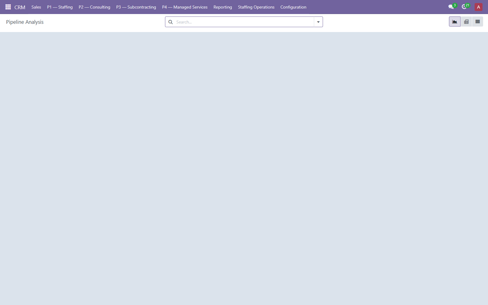
Weekly pipeline review questions
- Does every active deal have a real next action and owner?
- Are stage, expected value, probability and close timing evidence-based?
- Which deals have been stationary for more than five days?
- Which Staffing requirements are at risk against target fill date?
- Which placements or services approach renewal?
- Are confirmed commercial records linked to exactly one delivery project?
21 | Daily Playbooks by Role
Sales Executive — daily
- Review My Activities and overdue items.
- Update customer/contact details from new interactions.
- Progress opportunities using evidence and schedule the next action.
- Review quotations awaiting response.
- Close dead deals Lost with a reason.
Sales Manager — daily/weekly
- Review team pipeline, stalled deals and forecast quality.
- Validate commercial readiness before major confirmations.
- Review rate/margin exceptions and upcoming renewals.
- Coach owners on incomplete records and overdue actions.
Recruiter — daily
- Review open requirements and target fill dates.
- Progress sourcing/screening and update candidate records.
- Schedule interviews and chase outstanding feedback.
- Maintain submission rates, availability and resume currency.
Project Manager — daily/weekly
- Review project tasks, blockers and deadlines.
- Confirm owners and customer acceptance criteria.
- Review submitted timesheets and delivery risks.
- Keep opportunity/order/project traceability intact.
Consultant — daily
- Review assigned tasks and priorities.
- Update task progress and blockers.
- Record accurate time with meaningful descriptions.
- Upload deliverables to the approved project/task location.
22 | Data Governance and Security
Minimum governance rules
- Search before creating customers, contacts, candidates, opportunities and requirements.
- Use approved tags, selections and naming standards.
- Do not delete records that are referenced by quotations, projects, staffing records or timesheets.
- Use Archive for obsolete master data and Lost/Cancelled for terminated workflows.
- Do not export customer/candidate data without a legitimate business purpose.
- Keep passwords, API keys, infrastructure secrets and private credentials outside Odoo records and attachments.
- Do not grant access manually when the Employee role workflow can be used.
Chatter guidance
| Use Chatter for | Do not use Chatter for |
|---|---|
| Customer decisions, meeting outcomes, approved assumptions, delivery evidence, internal handoff notes. | Passwords, secrets, unverified allegations, excessive personal data or off-topic conversation. |
Audit readiness
A complete business record should show who created/changed it, the customer context, current owner, next action, stage history, commercial document, contract dates and downstream delivery record.
23 | Troubleshooting and FAQ
| Problem | Likely cause | Resolution |
|---|---|---|
| Opportunity moves to another team/stage after saving. | Classification routing corrected an inconsistent manual selection. | Confirm the Deal Classification. Use stages belonging to that pipeline. |
| Cannot mark Won. | Commercial readiness fields are missing. | Complete customer, classification, service, urgency, source, positive value and contract information. |
| Cannot confirm quotation. | Missing readiness fields, no service line or customer mismatch. | Read the validation message and correct the opportunity/order rather than bypassing it. |
| Wrong quotation template. | Deal Classification is incorrect or was changed after quotation creation. | Correct classification and recreate/review the quotation before confirmation. |
| Duplicate delivery project. | A project was created manually outside the integrated flow. | Use the project linked from CRM/Sales Order; ask an administrator to reconcile duplicates. |
| Cannot create Staffing Requirement. | Opportunity is not classified Staffing or required fields are missing. | Correct the CRM opportunity and enter customer, role, positions and recruiter. |
| Cannot complete interview. | Outcome is still Pending. | Select an outcome and enter feedback. |
| Cannot confirm placement. | No contract/order, unconfirmed quotation, invalid rates or mismatched customer. | Correct the commercial link and margin data. |
| Cannot activate placement. | Placement is not Confirmed or start date is in the future. | Confirm approval and wait until the authorized start date. |
| Employee cannot see CRM/Sales/Project. | Role not synced, user is portal, or invitation incomplete. | HR Manager verifies Work Email/Internal User, selects role and Sync IntraStack Access. |
| Invitation email not received. | SMTP, spam filtering or invalid work email. | Verify email, mail server/logs and use Resend Invitation. |
| Import creates duplicates. | External IDs changed or customer names used as unstable keys. | Restore correct External IDs, deduplicate under administrator control and rerun Test. |
24 | Complete Worked Example and Training Simulation
This chapter is the recommended classroom “golden path”. All names, addresses and commercial values below are fictional. Use a training/staging database or records clearly prefixed TRAINING; do not create these examples in production without authorization.
Scenario and actors
| Item | Training value |
|---|---|
| Customer | TRAINING — Atlas Manufacturing |
| Customer contact | Emily Carter, Head of Technology, emily.carter@example.test |
| Sales owner | Training Sales Manager |
| Recruiter | Training Recruiter |
| Project Manager | Training Project Manager |
| Consulting deal | TRAINING — Atlas Cloud Transformation 2026 |
| Staffing deal | TRAINING — Atlas Senior Cloud Architect Staffing |
| Candidate | TRAINING — Maria Santos |
Part 1 — Create the customer database
Open Contacts → New → Company. Enter TRAINING — Atlas Manufacturing, a fictional address, country, website and telephone. Add the Staffing Buyer tag if the scenario includes staffing.
Inside the company, add Emily Carter as an individual contact. Enter job position Head of Technology, fictional email/mobile and link her to Atlas Manufacturing.
Return to Contacts, search Atlas and Emily, and confirm company/person are connected rather than duplicated.
Expected result: one company, one related stakeholder, searchable contact information and correct relationship tags.
Part 2 — Run a Cloud Transformation deal from discovery to delivery
2.1 Create and classify the opportunity
| Field | Training value |
|---|---|
| Opportunity | TRAINING — Atlas Cloud Transformation 2026 |
| Customer | TRAINING — Atlas Manufacturing |
| Deal Classification | Consulting |
| Service Category | Cloud |
| Urgency Flag | Short-term (30–90 days) |
| Source Tracking | Referral |
| Expected Value | 75,000 |
| Decision Maker? | Enabled |
| Contract Start / End | 2026-09-01 / 2026-12-31 |
| Renewal Review Date | 2026-11-01 |
- Open CRM → P2 — Consulting and select New.
- Use quick create for the name/customer, then select Edit to complete all fields above.
- Save and confirm Sales Team is P2 — Consulting and the first stage is Discovery.
- Open Activities. Review the automatic Qualify Lead and discovery-preparation activities.
- Log a note: current environment, stakeholders, objective, known constraints and agreed next meeting.
Expected result: correctly routed Consulting opportunity with an accountable salesperson, a next activity and complete commercial metadata.
2.2 Progress discovery and qualification
- In Discovery, record current-state systems, workloads, security constraints, business outcomes and stakeholders.
- Complete the discovery activity only after the call is held; immediately schedule the next action.
- Move to Qualification after confirming budget, authority, need, timeline and procurement path.
- Move to Solution Design after technical owners and acceptance criteria are agreed.
- Upload only approved non-secret architecture/proposal artefacts to Chatter.
2.3 Create the SOW quotation
- Select New Quotation from the opportunity.
- Verify the customer and opportunity linkage.
- Verify the Consulting SOW template and review Discovery/Assessment, Implementation and Project Management service lines.
- Adjust descriptions, quantities and prices to match the approved proposal. Ensure the order total and Expected Value are commercially consistent.
- Move the CRM stage to Proposal, send the quotation through the approved channel and record customer feedback.
- Move to Negotiation when scope/price/terms are under final review.
2.4 Confirm and verify integrated delivery
- Before confirmation, recheck Customer, Classification, Service Category, Urgency, Source, positive Expected Value, contract dates and at least one service line.
- Confirm the Sales Order only after customer acceptance.
- Return to the opportunity and verify it is Won/Closed Won and shows one linked Delivery Project.
- Open the project and verify the opportunity and Sales Order links.
- Review the five Consulting template tasks; assign owners, deadlines and acceptance evidence.
- As a Consultant, open the correct task and record a training timesheet with a meaningful description.
Expected result: one chain of traceability: Customer → Consulting Opportunity → SOW/Sales Order → one Delivery Project → tasks/timesheets.
Part 3 — Run the Staffing branch end to end
3.1 Create the Staffing opportunity and requirement
- Create TRAINING — Atlas Senior Cloud Architect Staffing with Classification Staffing, Service Cloud, Expected Value 40,000 and suitable contract dates.
- Verify automatic routing to P1 — Staffing / New Requirement.
- Use the Staffing smart button or CRM → Staffing Operations → Requirements.
- Create requirement TRAINING — Atlas Senior Cloud Architect — HCMC.
- Select the Staffing opportunity, Atlas customer, Emily as contact and Training Recruiter.
- Enter one position, Hybrid, Contract, expected start/end and target fill date.
- Enter required skills: AWS, Terraform and Kubernetes.
- Enter Target Bill Rate 65/hour and Target Cost Rate 45/hour; verify positive Target Margin.
- Select Open, then Start Sourcing.
3.2 Create and submit a candidate
- Create candidate contact TRAINING — Maria Santos, Individual, with the Candidate tag and fictional contact details.
- From the requirement, create a Candidate Submission for Maria.
- Select source LinkedIn, availability date, proposed bill 65 and cost 45.
- Attach a non-sensitive training resume and record a screening summary covering the mandatory skills.
- Select Start Screening. After the mock screening, select Submit to Client.
- Verify Submitted On is populated and requirement/submission links are correct.
3.3 Schedule and complete the interview
- Open Candidate Submission → Interviews and create a Client interview.
- Select Video Call, date/time, duration, Training Project Manager as internal interviewer and Emily as client interviewer.
- Enter a fictional meeting link. Review the event in Interview Schedule calendar.
- After the simulation, select outcome Strong Yes and enter job-relevant feedback.
- Select Complete Interview. Confirm the submission moves to Interview, then move it to Offer.
3.4 Create, approve and activate the placement
- Create a Placement from the accepted/offered submission.
- Enter a fictional SOW reference, start/end dates, 65 bill rate, 45 cost rate and 40 hours/week.
- Link the confirmed Staffing Sales Order or Delivery Project when available.
- Review Gross Margin, Margin %, Weekly Revenue and Weekly Margin.
- Select Submit for Approval and then Confirm Placement after commercial review.
- Attempt Start Placement before the start date during training and observe the validation; do not bypass it.
- On/after start date, select Start Placement. Verify placement Active, submission Accepted and requirement Filled Positions/Open Positions updated.
Expected result: Staffing Opportunity → Requirement → Candidate Submission → Interview → confirmed Placement, with commercial and operational links intact.
Part 4 — Employee onboarding simulation
- As HR Manager, create TRAINING — Sales Executive with a controlled training email.
- Select IntraStack Role Sales Executive.
- Select Create Internal User, then Sync IntraStack Access.
- Resend Invitation only if required and SMTP is configured.
- Log in as the training user and verify Contacts, CRM, Sales, Projects and Timesheets according to the assigned role.
- Change the role only as a separate access-control exercise, synchronize again and verify old managed permissions are removed.
Trainer evidence and sign-off
Trainer sign-off checklist
- Participant can find a customer and review contact information.
- Participant can create/classify an opportunity and explain automatic routing.
- Participant understands Won/confirmation readiness.
- Participant can explain CRM → quotation → project traceability.
- Recruitment users can complete Requirement → Submission → Interview → Placement.
- Delivery users can update tasks and timesheets.
- Managers can use activities, saved filters and reports.
- The complete fictional record chain can be followed through smart buttons without disconnected duplicates.
Appendix A | Quick Reference and Glossary
Quick process references
| Objective | Recommended path |
|---|---|
| Find customer details | Contacts → search company/person → open record. |
| Create a deal | CRM → appropriate P1/P2/P3/P4 pipeline → New. |
| Import opportunities | CRM list → Import records → Test → Import. |
| Create a quotation | Opportunity → Create Ready Quotation/New Quotation. |
| Open delivery | Opportunity or Sales Order → Delivery Project smart button. |
| Create staffing requirement | Staffing opportunity → Staffing smart button, or CRM → Staffing Operations → Requirements. |
| Review interviews | CRM → Staffing Operations → Interview Schedule. |
| Review placements | CRM → Staffing Operations → Placements. |
| Activate employee access | Employees → Employee → role → Create Internal User → Sync IntraStack Access. |
Glossary
| Term | Definition |
|---|---|
| CRM Opportunity | A potential commercial engagement tracked through a service-specific pipeline. |
| External ID | A stable import/integration key used to create or update the same record safely. |
| SOW | Statement of Work defining scope, deliverables, assumptions, price and acceptance. |
| Requirement | A specific customer staffing need, role or position set. |
| Submission | One candidate proposed against one staffing requirement. |
| Placement | The approved commercial engagement of a selected candidate. |
| Bill Rate | Amount charged to the customer per rate unit. |
| Cost Rate | Direct consultant/vendor cost per rate unit. |
| Gross Margin | Bill Rate minus Cost Rate; percentage is margin divided by bill rate. |
| Delivery Project | Project record generated from a confirmed commercial engagement. |
| Activity | A scheduled action with an owner and deadline attached to a business record. |
| Chatter | Odoo's record-level communication, attachment and change-history area. |
Support request information
When requesting support, provide: user name, date/time and timezone, record URL, exact error text, steps immediately before the error, expected result and a screenshot that does not expose passwords or secrets.